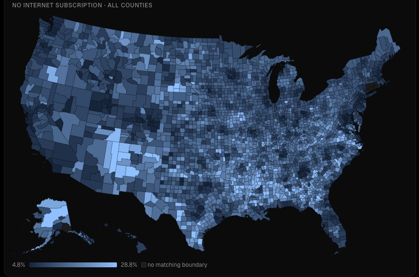
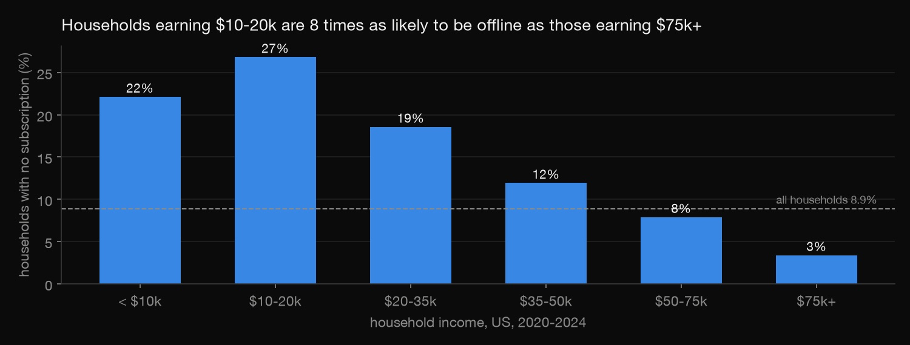
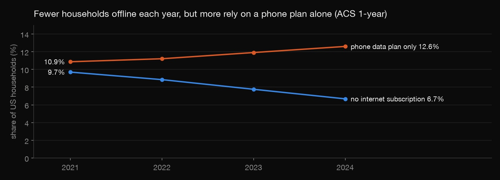
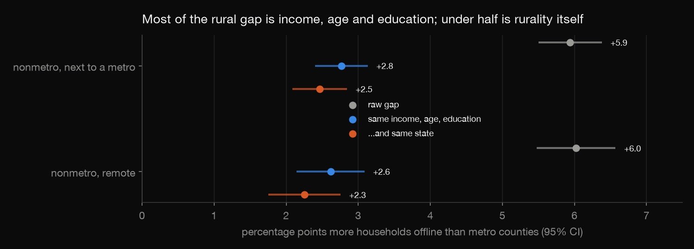
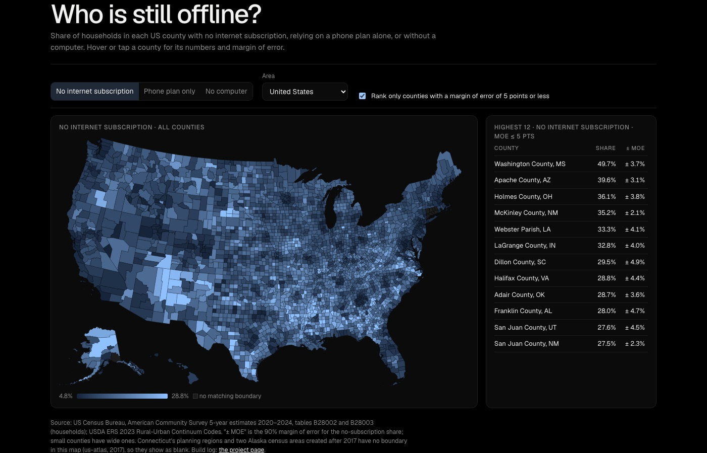
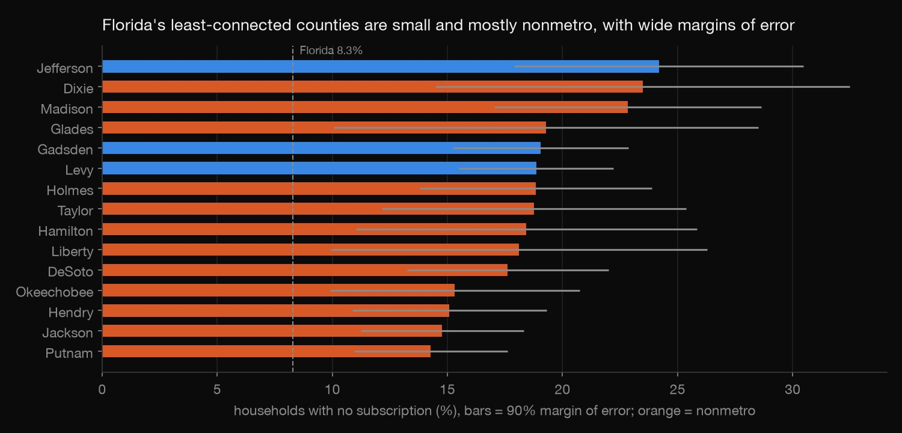

Python · Digital transformation · 2026-10
Who Is Still Offline?
The US digital divide county by county from the Census Bureau's ACS 2020–2024: how many households have no internet, how much of the rural gap is really about income, and an interactive map with margins of error.

County-level survey estimates with real uncertainty: only 1,892 of 3,144 counties have a margin of error within ±5 points. The findings are associations, not causes.
01 — The problem
As benefits, healthcare, school and job applications move online, a household without internet is left out of digital transformation. Federal and state programmes are spending billions to close the gap. They have to choose between building networks (access) and helping people afford and use them (adoption). Who is still offline, and is the gap mostly about where people live or about income, age and education?
02 — What I built
An analysis of the Census Bureau's American Community Survey for all 3,144 US counties:
- County shares with margins of error, using the Census Bureau's formula for a proportion.
- The income gradient and the 2021–2024 trend.
- An access-vs-adoption regression: how much of the rural gap survives holding income, age and education equal.
- An interactive county map that ranks only reliable estimates by default.
03 — How it was built
- 01
Get the data without an API key
The Census API now requires a key, but the ACS table-based summary files on the Census file server don't.
download.pystreams six national tables for 2020–2024: internet subscriptions, computers, internet by income, income, age and education. It keeps only the US, state and county rows, adds the 2021–2024 one-year tables for the trend, and fetches the USDA's rural-urban codes.if line.startswith(KEEP): - 02
Clean the survey codes and carry the error
ACS files use placeholder numbers: −666666666 for a missing estimate and −555555555 for "no sampling error". Left in, one New Mexico county dragged a group's average income below zero. Every county share also carries its 90% margin of error from the Census Bureau's proportion formula.
check.pyrecomputes Hillsborough County's by hand.inside = num_moe ** 2 - p ** 2 * den_moe ** 2 - 03
Measure the gap and its trend
8.9% of US households (11.5 million) have no internet subscription. The one-year estimates show the gap closing, from 9.7% in 2021 to 6.7% in 2024. Over the same years, more households rely on a phone data plan alone. Income is the steepest divide: 26.8% of households earning $10–20k are offline, against 3.4% of those earning $75k or more.


- 04
Separate access from adoption
Rural counties have about 6 points more households offline than metro counties. A weighted regression across 3,143 counties holds income, age and education equal, and the gap shrinks to 2.6–2.8 points, or 2.3–2.5 within the same state. Rurality alone explains 30% of the variation between counties; income, age and education explain 62%.

"all": "y ~ log_income_z + age65_share_z + no_hs_share_z + C(rural, Treatment('metro'))", - 05
Map it honestly
The interactive map shows every county, with its margin of error in the tooltip. Its ranking list includes only counties whose margin is 5 points or less, because a county at 45% ± 20 points can't be ranked. The reliable worst cases tell different stories:
- the Mississippi Delta;
- Navajo Nation counties (an access gap);
- Holmes, Ohio and LaGrange, Indiana, home to large Amish communities, where being offline is often a choice.

04 — Results
| Households offline | Share |
|---|---|
| United States | 8.9% |
| Metro counties | 8.0% |
| Nonmetro counties | 14.0% |
| Earning $10–20k | 26.8% |
| Earning $75k+ | 3.4% |
| Florida | 8.3% |
Florida's least-connected counties are small and mostly nonmetro, and their margins of error are wide.

What it implies: under half of the rural gap is rurality itself. Network-building money reaches the access part. The larger, adoption part needs affordability help, devices and digital-skills training, aimed at low-income households wherever they live.
05 — What I'd do next
- Add the FCC's broadband-availability map to separate "no service" from "not subscribing" directly.
- Tract-level analysis inside Tampa Bay.
- Update the map boundaries for Connecticut's planning regions.